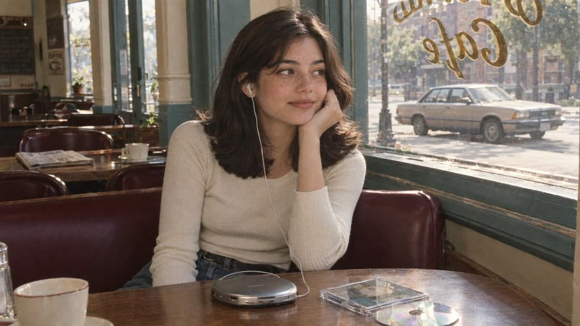

1990s corner café candid
GRN-015Grain / Filterunspecifiedby Tanvir (@Tanvir48992)2026-10-04

Nostalgic 1990s candid lifestyle shot in a corner café, wide 16:9 framing with period film color.
Prompt
Nostalgic 1990s candid lifestyle photograph of a young woman sitting in a corner cafe, wide 16:9 landscape composition, shot at eye level from across the table, framed from the head to the table surface. She sits slightly angled toward the camera in a burgundy upholstered booth seat, looking off to the side toward the window with a soft, content, faintly amused half-smile, lost in her own thoughts. She has shoulder-length, glossy dark-brown hair parted slightly off-center with a smooth flip at the ends. Warm hazel-brown eyes, soft natural brows, light freckles, natural skin texture with no heavy makeup, and soft rosy-nude lips. Small silver stud earrings, with thin white wired earbuds trailing down from one ear to a silver portable CD player (Discman) on the table, next to a clear CD jewel case and a disc. She wears a fitted cream ribbed long-sleeve crew-neck top, high-waisted dark-wash denim jeans and a thin silver ring on one hand. The setting is a sunlit corner cafe with large storefront windows, dusty teal-painted trim, cream-colored pillars, dark wood tables and burgundy chairs, a folded newspaper and a ceramic cup on a side table, and gold script lettering painted backward on the window glass. Outside, a vintage 1980s beige sedan is parked on a quiet street. Mood: calm, nostalgic, introspective, everyday and cinematic, like a still from an indie 90s romance film. Muted palette of cream, burgundy, dusty teal, denim blue and warm beige. Soft, natural daylight streaming through the big window from the right, with gentle contrast, lifted shadows and a warm glow on the face. Shot on 35mm film, 35mm lens, f/2.8, natural depth of field, Kodak Portra 400 look, soft film grain, slightly faded colors, subtle halation, candid documentary realism, hyper-detailed, 8K.
Our Seedance 2.5 adaptation
[ADAPTED for Seedance 2.5 by Grok Bot; not the creator's prompt. Follows the official BytePlus Seedance 2.5 prompt guide: asset binding → one-sentence summary → integer-second timeline → consistency notes → negatives.] API: duration 8, ratio 16:9, resolution 1080p, generate_audio true. Assets: Image 1 is the woman (identity lock; keep hair, freckles and outfit exactly). Image 2 is the 1990s café booth (scene reference). Summary: An 8-second nostalgic 1990s candid of the woman from Image 1 in the burgundy booth from Image 2, shot from across the table like a friend's 35mm moment that came to life. 0-3s: Locked-off eye-level shot, head to tabletop. She gazes toward the window with a faint, amused half-smile. Thin white wired earbuds run to the silver Discman on the table. 3-6s: She absently taps the CD jewel case and smiles to herself at something outside. Window light shifts softly as a cloud passes. 6-8s: She glances briefly toward the camera, then back to the window. Hold. Film look: 35mm color negative, warm tungsten-and-daylight mix, gentle grain, soft halation, no digital sharpness. Keep consistent: no modern objects or phones. The Discman, CD case and outfit stay identical. Audio: café murmur, cups on saucers, faint tinny music leaking from the earbuds. No BGM. No subtitles.
Tags: 1990s film, candid, warm grade